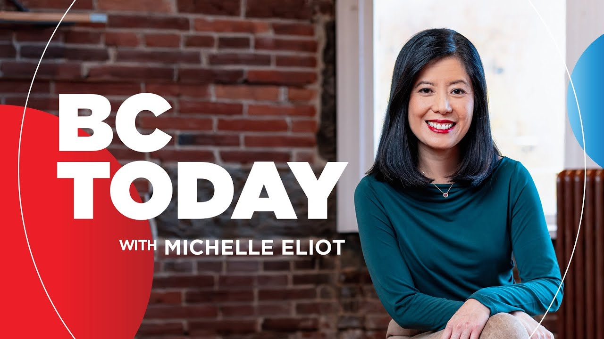

【优质日常英语节目：BC Today｜北约峰会｜国防开支｜租赁公寓｜温哥华时间2025-06-25】
Summary: NATO leaders are meeting to discuss increasing defense spending to 5% of GDP, while Surrey City Council allows condo conversions to rentals due to market slowdown.
摘要： 北约领导人正讨论将国防开支提高至GDP的5%，同时素里市议会因市场放缓批准公寓转为租赁单位。

⏱️ Estimated Reading Time: 80 min
📚 六级生词 📚 雅思生词 📚 托福生词 📚 专八生词 📚 SAT生词 📚 考研生词 📚 GRE生词 📚 高考生词
Good afternoon.
下午好。
Thank you for joining us.
感谢您的参与。
NATO leaders are meeting at the Hague with most, including Canada, promising to spend 5% of GDP on defense, increasing to that within the decade.
北约领导人正在海牙会晤，包括加拿大在内的大多数国家承诺在未来十年内将国防开支增至GDP的5%。
What do you think of Canada boosting spending on defense?
您如何看待加拿大增加国防开支？
We'll talk to a foreign policy expert and take your calls.
我们将采访一位外交政策专家并接听您的来电。
Plus, Surrey City Council will allow some developers to turn hundreds of condos into rental units, and that's because of the slowing condo market.
此外，素里市议会将允许部分开发商将数百套公寓转为租赁单位，这是由于公寓市场放缓。
What do you think of that step and what would it mean if it caught on?
您如何看待这一举措？如果普及会有什么影响？
That's after 1230.
相关内容将在12:30后播出。
I'm Michelle Elliott.
我是米歇尔·埃利奥特。
Welcome to BC today.
欢迎收听《BC今日》。
Thanks for joining us on CBC Radio, CBC Television.
感谢通过CBC广播和电视收听我们的节目。
We're live streaming as well on YouTube on the CBC British Columbia page, and we are live on TikTok right now as well.
我们也在YouTube的CBC不列颠哥伦比亚频道直播，并同时在TikTok上直播。
So you can join the conversation there too.
您也可以通过这些平台参与讨论。
Well, it's been described as the largest increase in defense spending since the Second World War.
这被称为自二战以来国防开支的最大增幅。
This morning at the Hague, Prime Minister Mark Carney announced Canada has pledged to meet NATO's new defense spending target, 5% of GDP by 2035.
今天上午在海牙，总理马克·卡尼宣布加拿大承诺到2035年实现北约新的国防开支目标，即GDP的5%。
Carney has said that new benchmark would cost $150 billion per year.
卡尼表示，这一新标准每年将耗资1500亿加元。
This morning he spoke of an evolving international order.
今早他谈到了不断演变的国际秩序。
And now with those evolving threats worldwide, the threats are our own sovereignty are becoming more acute.
随着全球威胁演变，对我们主权的威胁也日益严峻。
With increasingly open-artic waters and rapid advances in cyber and AI and with advanced missile capacities, we can no longer rely on our geography to protect us.
随着北极水域日益开放、网络和人工智能的快速发展以及先进导弹能力，我们不能再依赖地理优势保护自己。
As a global landscape shifts, the security created by the alliance remains the strongest and the most effective way of protecting the Soviet Union, sovereignty and protecting the security Canadians.
随着全球格局变化，联盟提供的安全仍是保护主权和加拿大人安全的最强大、最有效方式。
The new target is higher than the former 2% of GDP, which Carney recently announced Canada would meet this year for the first time.
新目标高于之前的GDP的2%，卡尼最近宣布加拿大今年将首次实现这一目标。
We're asking you, what do you think of Canada ramping up defense spending?
我们想问您：如何看待加拿大增加国防开支？
You can call us now 1-800-825-5950-604-669-3733.
您可以拨打1-800-825-5950或604-669-3733。
You can also hit pound 690 on your cell phone.
手机用户可拨打#690。
You can email BCToday at cbc.ca or leave your comment on our TikTok live.
您也可以发送邮件至BCToday@cbc.ca或在TikTok直播留言。
My guest is Michael Manuleck, professor at Carlton University's Norman Patterson School of International Affairs.
我的嘉宾是卡尔顿大学诺曼·帕特森国际事务学院的迈克尔·马努莱克教授。
He's also a former policy staffer at Canada's Department of National Defense.
他曾是加拿大国防部的政策顾问。
Good afternoon.
下午好。
Thanks for being with us, Michael.
感谢您的参与，迈克尔。
Great to be with you, Michelle.
很高兴与您交流，米歇尔。
How significant is this new NATO target of spending 5% of GDP on defense?
北约将国防开支目标定为GDP的5%，这一举措有多重要？
It's a very significant boost.
这是一次非常显著的提升。
It is as was stated, the largest single increase in defense spending since the end of the Second World War.
正如所述，这是自二战结束以来国防开支的最大单次增幅。
We are really ramping up to a dangerous global context and also a context that's full of threats and new threats to Canada.
我们正加速应对危险的全球局势，以及加拿大面临的各种新旧威胁。
It really does represent a step change within NATO's defense, within among NATO countries, but also in NATO's defense preparedness and also its industrial preparations for any potential risks that the countries may face.
这确实代表了北约内部及成员国国防的阶段性变化，也体现了北约在防御准备和应对潜在风险的工业准备上的转变。
Do you see it as justified then?
您认为这是合理的吗？
I think that the world is an increasingly dangerous place.
我认为世界正变得越来越危险。
I think that requires a certain degree of preparation.
这需要一定程度的准备。
The hope is that among NATO countries is that by being prepared, they would pursue peace through strength and that is we would deter any potential adversaries that could threaten the NATO countries.
北约国家的希望是通过准备以实力求和平，从而威慑任何可能威胁北约的潜在对手。
At the same time, there are risks that are associated with this.
但与此同时，这也伴随着风险。
It is a very significant financial investment.
这是一项非常重大的财政投入。
Just speaking within our own country, there will be very real priorities that the government will be unable to pursue social priorities that many Canadians care about in order to fund this level of defense spending, even at the 2% level, never mind at 3.5 or 5% level.
仅就我国而言，政府将无法优先处理许多加拿大人关心的社会问题，以资助这一水平的国防开支，即使是2%的水平，更不用说3.5%或5%。
That's a really, really significant investment in that.
这是一项非常重大的投资。
There are also some potential dangers that this could further lead to an arms race, a global arms race.
还有一些潜在危险，这可能进一步引发军备竞赛，甚至是全球军备竞赛。
As we increase our defense spending, we become more threatening.
随着我们增加国防开支，北约对某些对手的威胁性也会增加。
NATO does to some of our adversaries, which would justify within their own domestic context an increasing defense spending, which we would see as threatening.
这可能在对手国内背景下为其增加国防开支提供理由，而我们又会将其视为威胁。
There's the possibility the risk, the danger of a spiraling in this respect.
这可能导致局势螺旋式升级的风险。
How does that help things if the aim is deterrence?
如果目标是威慑，这如何有助于解决问题？
Well, I think to a certain extent, it depends on how we do it, how it becomes executed.
我认为在某种程度上，这取决于我们如何执行。
And so Canada, for its part, is going to put a lot of emphasis on the Arctic side of things.
就加拿大而言，我们将重点放在北极事务上。
This was already expressed in the Defense Policy Update under the Trudeau Government and the Prime Minister, Prime Minister Karni has also put a good deal of emphasis on that.
这已在特鲁多政府的国防政策更新中体现，卡尼总理也对此非常重视。
And so that's protecting our own territory from heightened threat.
这是为了保护我国领土免受日益严重的威胁。
I don't think that that's particularly threatening.
我认为这并不具有特别的威胁性。
I think what we'll be critical here is that we are able to potentially reinforce not just pursue military primacy in a sense as a mechanism of deterrence, but also as using this as a means of reinforcing multilateral institutions and a rules-based international order that Canada certainly benefits from.
我认为关键在于我们不仅能通过追求军事优势作为威慑机制，还能借此加强多边机构和基于规则的国际秩序，加拿大无疑从中受益。
We do benefit Canada from being a safer world.
更安全的世界确实使加拿大受益。
We have some comments coming in now.
我们现在收到了一些评论。
My guest is Michael Manuleck, a professor at Carlton University's Norman Patterson School of International Affairs, a former policy staffer at Canada's Department of National Defense.
我的嘉宾是迈克尔·马努莱克，卡尔顿大学诺曼·帕特森国际事务学院教授，曾任加拿大国防部政策顾问。
On TikTok, when we talk about, you know, Mark Karni was asked this morning whether there would be public support or social licensed for this increase in spending, Vince comments on TikTok, more taxes.
在TikTok上，当谈到马克·卡尼今早被问及公众是否会支持或社会是否认可这一开支增加时，文斯评论道：“又要加税了。”
Great.
好的。
Okay, thank you very much.
非常感谢。
And an email from Dave and Squamish.
还有一封来自斯阔米什的戴夫的邮件。
Don't worry about Canada spending 5% GDP on the military.
别担心加拿大将GDP的5%用于军事。
It is a delaying tactic adopted, obviously, by all the NATO leaders to ward off Trump and his threats until he is no longer on the world political stage.
这显然是北约领导人采用的拖延策略，以抵御特朗普及其威胁，直到他退出世界政治舞台。
PM Karni has shown everyone how to not and outweigh Trump's nonsensical rhetoric that's from Dave in Squamish.
卡尼总理向所有人展示了如何不理会并压倒特朗普的无稽之谈。——来自斯阔米什的戴夫。
What do you make of that?
您对此有何看法？
Donald Trump is at the NATO summit as well.
唐纳德·特朗普也参加了北约峰会。
How much influence has he had on this target being increased to 5% and most of the allied leaders agreeing to this pact?
他对将目标提高到5%以及大多数盟国领导人同意这一协议有多大影响？
Right.
是的。
I think that he was very critical to doing this.
我认为他对此非常关键。
He was the one earlier this year that first raised the idea of a 5% defense spending target for NATO.
他是今年早些时候第一个提出北约国防开支目标为5%的人。
And NATO, and I think that this came from the NATO bureaucracy through the Secretary General's Office, decided to be proactive in actually taking him up on that.
北约，我认为这是通过秘书长办公室的北约官僚机构，决定主动接受他的提议。
The United States is absolutely critical to NATO.
美国对北约至关重要。
It is even when Canada was one of the first three countries to negotiate the North Atlantic Treaty in 1949, it was always seen as an American commitment to Europe.
即使在1949年加拿大是谈判《北大西洋公约》的首三个国家之一时，这始终被视为美国对欧洲的承诺。
And after the experience of the Second World War and the First World War, where the United States came into late and that had disastrous consequences, the country saw it as absolutely essential that the United States be committed to European defense.
在经历了第一次和第二次世界大战后，美国参战较晚并带来了灾难性后果，因此国家认为美国必须致力于欧洲防御。
And now the possibility that the US commitment to Article 5, the core elements, the mutual collective defense core of the North Atlantic Treaty, that an attack on one NATO country is an attack on all, if the US commitment wapeers, then the alliance really falls apart.
而现在，如果美国对《北大西洋公约》第五条（即对一个北约国家的攻击视为对所有国家的攻击）的承诺减弱，那么联盟将真正瓦解。
And that could be hugely destabilizing.
这可能造成极大的不稳定。
And so the American role was absolutely essential.
因此美国的作用绝对关键。
You'll notice that the review date for progress on this is 2029, which conveniently falls after President Trump's locked office.
您会注意到，这一进展的审查日期是2029年，正好在特朗普总统任期结束之后。
So there's probably a little bit of that aspect there.
因此这可能有点这方面的考虑。
There is a little bit of flexibility in the language and a few spots that can open some room for maneuver.
措辞中有一些灵活性，某些地方留出了操作空间。
But make no mistake.
但别搞错了。
I think every US president has been pushing for this.
我认为每位美国总统都在推动这一点。
There's even once Trump leaves office, it's not as if the United States is going to become uninterested in the level of spending of other NATO countries.
即使特朗普离任，美国也不会对其他北约国家的开支水平失去兴趣。
But yeah, the US role was essential.
但没错，美国的作用至关重要。
And as a well-traum full of essential.
而且非常关键。
As is you mentioned the obligation to Article 5, which is that principle of collective defense, an attack on one ally is considered an attack against all allies.
正如您提到的第五条义务，即集体防御原则，对一个盟友的攻击视为对所有盟友的攻击。
And as you mentioned, Article 5, let's just hear what Donald Trump had to say in response to a reporter's question on that today.
正如您提到的第五条，让我们听听唐纳德·特朗普今天对记者提问的回应。
Is it clear by your stance on Article 5 just yesterday?
您昨天对第五条的立场是否明确？
Is that something you can explain?
您能解释一下吗？
I said, that's why I'm here.
我说，这就是我在这里的原因。
I didn't stand with it.
我没有支持它。
I wouldn't be here.
我就不会在这里了。
So you would defend countries in the United States?
所以您会保卫美国的国家？
Well, what would I be here?
不然我在这里干嘛？
Okay, Michael Manu.
好的，迈克尔·马努。
Like, I'm not going to ask you to interpret what he's saying there.
我不打算让您解读他的话。
But how much, what do you make of his comments and how much pressure is there on Donald Trump now to commit to Article 5 given the commitment of member states to the 5% increase?
但您如何看待他的言论？鉴于成员国承诺将开支增至5%，特朗普现在面临多大压力要求他承诺遵守第五条？
Or the increase to 5% part of me?
或者将开支增至5%的部分？
Yeah, I think that this was a proactive step by NATO to try to ensure a strong U.S. commitment.
是的，我认为这是北约为确保美国的坚定承诺而采取的主动步骤。
Now, that commitment is something that only is only tested in a once it's violated.
而这种承诺只有在被违反时才会受到考验。
And so as long as he retains that language, as long as he's given something to walk away with and say, look at what I've done.
因此只要他保持这种说法，只要他有理由声称“看看我做了什么”，就可以维持现状。
And you've noticed the secretary general of NATO was very, was very complimentary was, you know, that approach of, of, of flattering the president and flattering his impact on the summit.
您会注意到北约秘书长非常恭维，用奉承总统及其对峰会影响的方式。
I think that that hopefully will, will be able to sustain the U.S. commitment in NATO through, through this period of turbulence while he's in office.
我希望这能在他在任期间的动荡时期维持美国对北约的承诺。
Lots of comments, comments coming in now asking you, what do you think of Canada ramping up?
现在有很多评论问您：如何看待加拿大增加国防开支？
Defense spending as part of this NATO pact, a new target of spending 5% of GDP on defense by 2035.
作为北约协议的一部分，加拿大计划到2035年将国防开支增至GDP的5%。
And as you heard, that will be reviewed in 2029.
如您所闻，这一目标将在2029年进行审查。
So what do you think of the boost in defense spending by, by the Canadian government?
您如何看待加拿大政府增加国防开支？
1-800-825-5950-604-669-3733?
请拨打1-800-825-5950或604-669-3733。
You can hit pound 690 on your cell phone.
手机用户可拨打#690。
Our email is bctodayatcbc.ca and we are live on TikTok as well.
我们的邮箱是bctoday@cbc.ca，同时我们也在TikTok直播。
So feel free to put your comments there.
欢迎在那里留言。
Lots of comments coming in.
现在有很多评论。
In fact, Michelle writes, Canada should focus on protecting themselves and not the United States.
事实上，米歇尔写道：“加拿大应专注于保护自己，而不是美国。”
The U.S. is unreliable.
美国不可靠。
And another user says, how are we going to pay for it?
另一位用户说：“我们如何支付这笔费用？”
Here we go, deeper into debt.
我们会因此陷入更深的债务。
Thanks very much for your comments.
非常感谢您的评论。
Thanks for joining us on TikTok alive as well.
也感谢在TikTok直播上参与讨论。
Let's go to the phones now.
现在让我们接听电话。
Tamara is on the line in Vancouver.
温哥华的塔玛拉来电。
Hi, Tamara.
你好，塔玛拉。
What do you think of this boost in defense spending?
您如何看待增加国防开支？
Well, first of all, I think that people are saying our taxes will increase or how will we pay for it.
首先，我认为人们在说我们的税收会增加或我们如何支付这笔费用。
I think we're being incredibly naive because it's kind of, you know, we have to find the money.
我认为我们过于天真，因为我们必须找到资金。
This is one of the most important issues of our time right now when, you know, evil strongman, like Putin, are allowed to just do whatever they want.
这是我们这个时代最重要的问题之一，像普京这样的邪恶强权者可以为所欲为。
Clearly, I'm Ukrainian Canadian.
显然，我是乌克兰裔加拿大人。
And so this, you know, it's a real source bot for me, but he seems to be someone who just can't be controlled.
这对我来说是真正的痛苦来源，但他似乎是无法被控制的人。
And with Trump likely bought by the Kremlin, I mean, it's fairly obvious that that's the case that he's acting in their interest, not in America, not in Canada, certainly.
而特朗普很可能被克里姆林宫收买，显然他的行为符合他们的利益，而非美国或加拿大。
We're not going to be able to buy into the golden dome, ass, and I'm sort of idea.
我们无法接受这种虚伪的幻想。
We have to defend ourselves.
我们必须自卫。
Or we're sitting ducks because of our geography.
否则我们将因地理位置成为活靶子。
It makes no sense for us to whine about how we're going to pay for it.
抱怨如何支付费用毫无意义。
We have to find how to pay for it and do it.
我们必须找到支付方式并付诸行动。
We need to defend ourselves.
我们需要自卫。
Tamara, good to have you, Colin.
塔玛拉，很高兴有你，科林。
Thanks so much for your call.
非常感谢你的来电。
Pete is next in Vancouver now.
接下来是温哥华的皮特。
What do you think of the boost in defense spending, Pete?
皮特，你对增加国防开支有何看法？
Long overdue because it's not just the true neoliberal liberals and conservatives for decades have made promises about 2% to say that they value the Canadian military, but it's all pretending to care because they don't properly fund them.
早就该增加了，因为几十年来新自由主义者和保守派都承诺2%的军费以显示他们重视加拿大军队，但都是假装关心，因为他们并未真正拨款。
They don't properly resource them.
他们没有提供足够的资源。
They don't properly supply them, which causes a lot of problems.
他们没有充分供应，导致许多问题。
And now, essentially, when we have to the south of a border, a Russian vassal state leader, obviously, Karin cannot call him that, but that's what he functionally is.
而现在，我们南边边境有一个俄罗斯的附庸国领导人，卡琳显然不能这么称呼他，但事实如此。
He's perting Putin's talking points.
他在重复普京的论调。
And I'm not going to go there unless I get 5%, it's all about his ego.
除非我得到5%，否则我不会让步，这全是他的自负。
So we need to expand the defense thing.
因此我们需要扩大国防开支。
The 5%, some European companies, countries are going to do that because you have to assume America is going to abandon NATO, America, it's just a matter of when, when he's in power, and you need to plan for that.
5%的军费，一些欧洲国家和企业会这么做，因为必须假设美国会抛弃北约，这只是时间问题，他掌权时就会发生，必须为此计划。
So they need to ramp up.
因此他们需要加快步伐。
But we should also get more integrated in Europe.
但我们也应加强与欧洲的合作。
Why should we be relying on American arms when the Americans have threatened to annex us and destroy us and the Americans, what they did to the Ukrainians, where they decided to, oh, Donald Trump is upset.
为何要依赖美国的武器？美国人曾威胁吞并并摧毁我们，他们对乌克兰的所作所为，仅仅因为特朗普不高兴就停止供应。
So we're going to stop the supplies and we're going to kill off the intelligence that we've been given to Ukraine, and the Ukrainians get slaughtered.
他们停止供应并切断情报支持，导致乌克兰人惨遭屠杀。
So you're going to have a new defense industry built up because even now the Europeans aren't trusting Americans because they could break their jets, right, or break their data side.
因此需要建立新的国防工业，因为现在欧洲人也不信任美国人，他们可能破坏战机或数据系统。
Okay, I'm not going to give you updates for this jet.
好吧，我不会再提供这架战机的更新。
Well, now you've got like a $35 million brick.
现在你手里只有一块价值3500万美元的砖头。
So we need to start integrating with Europe.
因此我们需要开始与欧洲整合。
The Chinese are doing icebreakers through the Arctic.
中国正在北极建造破冰船。
China's not an Arctic nation.
中国并非北极国家。
So people are going to go through the Arctic.
但人们将穿越北极。
We can't depend on the Americans.
我们不能依赖美国人。
Yes, we have to have some relationships, but we have to assume it's going to be hostile or semi-hostile.
是的，我们必须保持一些关系，但必须假设未来是敌对或半敌对的。
We need new allies.
我们需要新的盟友。
We need to spend money versus to sort of the traditional liberal conservative, parroting we care, but not actually putting the money in.
我们需要投入资金，而非像传统自由派和保守派那样空谈关心却不拨款。
That would have been the announcement from Karne was the first time that that increase would actually happen to 2%, let alone 5%.
卡琳的声明是首次将军费提高到2%，更不用说5%。
Pete, thank you very much for your call.
皮特，非常感谢你的来电。
An email now from Gary who writes, NATO nations must increase defense spending because Trump, the Republican party, and Putin, present a serious national security threat to NATO nations.
现在收到加里的邮件，他写道：北约国家必须增加国防开支，因为特朗普、共和党和普京对北约构成严重国家安全威胁。
We can no longer depend on the U.S. as a sane international partner.
我们不能再依赖美国作为理智的国际伙伴。
Okay, let's take some more of your calls here now.
好的，现在让我们接听更多来电。
Asking you, what do you think of the boost in defense spending by Canada as part of this new NATO defense spending pact asking its allies to meet, to increase its defense spending to 5% of GDP by 2035?
请问，你对加拿大作为北约新国防开支协议的一部分增加军费有何看法？该协议要求盟友到2035年将军费提高到GDP的5%。
Our numbers again, 1-800-825-5950-604-669-3733.
我们的号码再次是1-800-825-5950-604-669-3733。
We're live on TikTok.
我们正在TikTok直播。
Janna writes, it's necessary and we're taking your emails to bctodayatcbc.ca.
詹娜写道：这是必要的。我们的邮箱是bctodayatcbc.ca。
And let's head now to Steve and Squamish.
现在让我们连线斯阔米什的史蒂夫。
Hi Steve, thanks for the call.
你好，史蒂夫，感谢来电。
What do you think of this defense spending boost?
你对增加国防开支有何看法？
Well, I'm sorry if I repeat some things that have already been said because I didn't hear the entire piece, but I certainly have supported it.
抱歉如果我重复了已提到的内容，因为我没听完整段讨论，但我当然支持。
It's necessary.
这是必要的。
I'd like to point out that it's been necessary for both conservative and liberal governments that we've had in the last few decades.
我想指出，过去几十年无论是保守党还是自由党政府都有此必要。
They've all fallen short.
但他们都没做到。
However, I think you need to look at this in the bigger picture.
然而，我认为需要从更宏观的角度看。
First of all, we all know that Trump is a narcissist.
首先，我们都知道特朗普是个自恋狂。
Many of the wars that have been started since the Second World War have been American-caused.
二战后许多战争都是美国引发的。
And he is playing to his industrial base military machine and he's quite happy to sell all sorts of these weapons to any country that will come around.
他在迎合军工产业，并乐意向任何国家出售武器。
And we only need to look at history and see how the Americans have participated in that.
只需回顾历史就能看到美国如何参与其中。
And I think it's sad that we aren't looking for other alternative means, but the leaders of today are not making that very easy.
遗憾的是我们未寻求其他替代方案，但当今领导人并未提供便利。
And I don't even mention their names around the world.
我甚至不愿提及世界各地领导人的名字。
And Canada does have to play as a part.
加拿大必须发挥作用。
Thank you very much for the call from Squamish.
非常感谢斯阔米什的来电。
Steve, let me go back to our guests here, Michael Manulak, professor at Carlton, university's Norman Patterson School of International Affairs.
史蒂夫，让我们回到嘉宾迈克尔·马努拉克，卡尔顿大学诺曼·帕特森国际事务学院教授。
Lots of different differing opinions.
有许多不同意见。
There are some similar, but wondering, can you just go through how this would break down because there are two streams here, right, when it comes to that 5% increase?
有些相似，但想知道，你能解释这5%的增加如何分配吗？似乎有两部分？
Yeah, so there's a 3.5% target for core defense spending.
是的，3.5%用于核心国防开支。
I think that's very much similar to the 2% target except larger in terms of the things that would be defined as to fall under that category.
这与之前的2%目标类似，只是范围更大。
And then there's an additional 1.5 for infrastructure, critical infrastructure, so to civil preparedness, things of that sort.
另外1.5%用于基础设施和民防准备等。
So a much broader category of work that could fall within that.
这部分涵盖更广泛的工作。
It seems that most think that there's a lot of work that supports our defense preparedness or defense capacity that would fall into that.
大多数人认为许多支持国防准备的工作属于这部分。
So that aspect of it might be relatively easy to fulfill.
因此这部分可能较易实现。
The 3.5% aspect I think will be very significant, however.
但3.5%的部分将非常重要。
Okay, let's, in fact, on that, on how that money would be spent, Rick is on the line in Whistler now with some comments.
好的，关于资金如何使用，现在连线惠斯勒的里克。
Welcome, Rick.
欢迎，里克。
Hi there, yes.
你好。
Thank you for having me on today.
感谢邀请。
I've got some thoughts here in relation to the spending in the dollar amount.
我对这笔开支有些看法。
It's a huge amount of money, but I think if we can spend it strategically and properly in Canada's best interest, there may be opportunity to kill more than one bird with a single stone.
这是巨额资金，但如果能战略性地用于加拿大利益，可能一举多得。
Great Canadian project is our real way, done from the east of the west coast.
伟大的加拿大项目是真正的解决方案，从东海岸到西海岸。
What if we were able to link the north and north and southern border to be able to move troops in between support those northern reaches, build Canadian infrastructure from the inside to support this defense spending by securing our borders within and boosting the economy all at the same time.
如果能连接南北边境以便调动军队，同时建设基础设施以巩固边防并提振经济。
That'd be my great thought to go great forward for a great Canada.
这是我对伟大加拿大的构想。
Thank you very much.
非常感谢。
Have a great day.
祝你有美好的一天。
You have a great day as well, Rick.
你也一样，里克。
Thanks for the call.
感谢来电。
Let's take another call here now.
现在接听下一个来电。
Let's head to the island.
让我们连线岛上。
Yon is on the line in Langford now.
现在是兰福德的扬。
Yon, your thoughts?
扬，你的看法？
Welcome.
欢迎。
Well, my thoughts are that from a religious point of view, and whether it's the Bible or the Quran or with the Bifei, or with Hindu or whatever it is, we have the right to protect ourselves as a country.
我认为从宗教角度看，无论是圣经、古兰经还是其他经典，我们都有权自卫。
Canada cannot protect itself, and after the World War II, we could easily protect itself.
加拿大现在无法自卫，而二战后我们本可以轻松做到。
We even had an aircraft carrier after World War II.
二战后我们甚至拥有航母。
But now we can't do a lot.
但现在我们无能为力。
Russia has got a flag planted in North Pole on our territory, underwater.
俄罗斯已在北极我们的领土水下插旗。
We couldn't stop them from coming into our territory.
我们无法阻止他们进入我们的领土。
So we really do need to up our spending, and how are we going to do that?
因此我们确实需要增加开支，但如何实现？
I think we need to look at a wealth tax, unfortunately.
我认为需要征收财富税。
People don't want to hear about taxes, but...
虽然人们不愿听增税...
Yon, you know what?
扬，你知道吗？
Thank you very much for your point there.
非常感谢你的观点。
We actually have an email from Marianne in terrorists who makes a similar point.
我们收到玛丽安的邮件，她也提出类似观点。
She writes, this is a perfect time to increase the taxes from the rich, and to start collecting taxes not paid by the rich, because the money is sent overseas to tax havens.
她写道：这是向富人增税并追缴避税的好时机，因为他们的资金被转移到海外避税天堂。
Okay, so a couple of points there on how that increase could be paid for, or should be paid for according to Yon.
好的，关于如何支付这笔开支，扬提出了几点建议。
And Marianne, thanks very much.
非常感谢玛丽安。
Ken writes on TikTok, 5% is insanity.
肯在TikTok上写道：5%太疯狂。
That's $3,700 per person.
相当于每人3700美元。
Okay, that's not sure where the math is there, but that's the point in terms of the increase.
不确定他的计算方式，但这是关于增加的要点。
Two taxes coming from Ken Sauer on TikTok.
肯·索尔在TikTok上提到税收。
I have about a minute left here with Professor Manuleck.
现在还剩一分钟与马努莱克教授交流。
Your thoughts then on where this goes from here?
你对未来走向的看法？
Is it about proving or garnering that public support for this kind of spending?
是否需要争取公众支持？
Ken, Mark, can you do that?
肯、马克，你们能做到吗？
Do you think?
你认为呢？
I think he's making a strong case.
我认为他的论点很有力。
He's providing a nuanced assessment of the global security environment.
他对全球安全环境进行了细致评估。
I think that there is widespread acceptance and many of the callers, I think, also have acknowledged the security challenges, the very real security challenges, that the world faces, and that now Canada faces.
我认为许多人已认识到世界和加拿大面临的安全挑战。
So I think he can make that case to the Canadian public in this context.
因此我认为他能向加拿大公众阐明这一点。
It's very good to speak with you today.
今天很高兴与你交谈。
Thank you so much for spending the time.
非常感谢你的时间。
Thank you very much, Michelle.
非常感谢，米歇尔。
Michael Manuleck, his professor at Carlton University's Norman Patterson School of International Affairs.
迈克尔·马努莱克，卡尔顿大学诺曼·帕特森国际事务学院教授。
He's author of the book Change in Global Environmental Politics, Temporal Focus Points, and the Reform of International Institutions.
他是《全球环境政治变革：时间焦点与国际机构改革》的作者。
It is just about 1228.
现在是12:28。
You're with BC Today.
这里是BC今日。
I'm Michelle Elliott.
我是米歇尔·埃利奥特。
To other news now, the BC Center for Disease Control says there have been 49 cases of measles in the province so far this year, including 12 active as of yesterday.
现在播报其他新闻：BC疾控中心表示，今年全省已有49例麻疹病例，其中12例截至昨日仍活跃。
Some experts are pointing to lowering vaccination rate for the surge.
专家将激增归因于疫苗接种率下降。
Vancouver Infectious Disease Center President Dr. Brian Conway wants to spread the word about what people need to know about measles vaccines.
温哥华传染病中心主席布莱恩·康威博士希望普及麻疹疫苗知识。
Those born before 1970, we assume that they were infected naturally and carry lifelong immunity, as long as their immune system is in good shape, if not consult a healthcare provider to address this.
1970年前出生者通常自然感染并获得终身免疫，除非免疫系统受损，否则无需咨询医生。
Those born after 1970 were likely vaccinated, but we know that it requires two vaccines to be protected in a lifelong manner.
1970年后出生者可能已接种，但需两剂疫苗才能终身免疫。
If you aren't sure whether you got two shots, consult a healthcare provider, or for many people, the simplest thing would be to just go out and get a second shot to make sure that we get those vaccination rates up where we need them to be.
如果不确定是否接种了两剂疫苗，请咨询医疗保健提供者，对许多人来说，最简单的办法就是直接去接种第二剂，以确保疫苗接种率达到所需水平。
We're seeing community-based spread now in Canada, so that means that someone may have brought it into the community from outside, which we've done occurs naturally to a certain extent, nine-year-so cases a year, but then because vaccination rates are so high, there isn't any ongoing transmission.
我们现在看到加拿大出现社区传播，这意味着可能有人从外部将病毒带入社区，这种情况在一定程度上自然发生，每年约有九例，但由于疫苗接种率很高，没有持续传播。
Cases recognize, isolated, and there are no other cases.
病例得到识别和隔离，没有其他病例。
Now with lower vaccination rates, we're seeing community-based spread, so it's up to us to limit that, and the one way to do that is to make sure that we achieve, once again, 90% or better vaccination rates in the general population.
现在疫苗接种率较低，我们看到社区传播，因此我们有责任限制传播，方法之一是确保再次实现90%或更高的全民疫苗接种率。
You're with BC today, one more email on the question of what do you think of Canada boosting its defense spending as part of this new NATO target, 5% of GDP by 2035.
这里是BC今日节目，还有一封关于加拿大增加国防开支的邮件，作为北约新目标的一部分，到2035年达到GDP的5%。
MINA writes, boo to that.
MINA写道，反对这样做。
We need housing, transit, and more healthcare, not military stuff.
我们需要住房、交通和更多医疗资源，而不是军事开支。
Okay, thanks very much for your input there as well, MINA.
好的，非常感谢你的意见，MINA。
This now 1230, and you are with BC today here, I'm Michelle Elliott.
现在是12:30，这里是BC今日节目，我是Michelle Elliott。
Very nice to be with you this afternoon.
很高兴今天下午与大家在一起。
A little cooler today for sure, but we are thankful for it.
今天确实有点凉，但我们很感激。
Right now, though, it's time, not time for a weather report.
不过现在不是天气预报时间。
It is time for the CBC News Update with Rob Zimmerman.
现在是CBC新闻更新，由Rob Zimmerman播报。
Good afternoon, police say a homicide this week in Port Rennfru, appears to be an isolated incident.
下午好，警方表示本周在Port Rennfru发生的凶杀案似乎是一起孤立事件。
Few details have been released, but investigator say the man was found in the remote community Monday night.
细节尚未公布，但调查人员称周一晚上在偏远社区发现了这名男子。
There's no word on a motive or arrests.
目前没有关于动机或逮捕的消息。
The victim's name has not been released.
受害者姓名尚未公布。
Prince George RCMP say a recent drug bust is indicative of the threat level facing some officers.
乔治王子城皇家骑警表示，最近的一次毒品查获表明一些警官面临的威胁级别。
Search has conducted earlier this month, turned up several high powered firearms along with live hand grenades, policing the interior city evacuated an apartment building while an explosive disposal unit removed those grenades.
本月早些时候的搜查发现了多支高威力枪支和实弹手榴弹，警方疏散了内城一栋公寓楼，同时爆炸物处理小组移除了这些手榴弹。
And a new study from UNBC has found glaciers in Western Canada are disappearing at a record rate.
UNBC的一项新研究发现，加拿大西部的冰川正在以创纪录的速度消失。
Researchers say the rate of melting between 2021 and 24 was at double the pace seen in the previous decade.
研究人员表示，2021年至2024年间的融化速度是过去十年的两倍。
Lead researcher Brian Manonus says the melt rates over the last four years is more extreme than anything they've seen in the past 60 years and poses serious risks to everything from fresh water availability to geological risks.
首席研究员Brian Manonus表示，过去四年的融化速度比过去60年所见更为极端，对从淡水供应到地质风险等各方面都构成严重威胁。
And now the forecast on the North Coast showers this afternoon with a high of 13 highs reaching 23 with local smoke and some sunshine in the piece.
现在预报北海岸今天下午有阵雨，最高气温13度，局部地区有烟雾和阳光，最高可达23度。
In the central interior including Prince George, a mix of sun and cloud with a high of 21 highs in the mid 20s with some sunshine and a risk of severe thunderstorms in the cootneys in the southern interior including Kelona, a high of 23 with a mix of sun and cloud.
包括乔治王子城在内的中部内陆地区，多云间晴，最高气温21度，中旬可达20多度，有阳光，库特尼地区有强雷暴风险；包括基洛纳在内的南部内陆地区，多云间晴，最高气温23度。
And for Metro Vancouver greater Victoria and the Fraser Valley, mainly cloudy this afternoon with highs around 19 degrees.
大温哥华地区、大维多利亚地区和弗雷泽河谷今天下午以多云为主，最高气温约19度。
That's your CBC news update from Vancouver.
这是来自温哥华的CBC新闻更新。
Thank you Robby.
谢谢Robby。
I'm having a very busy week.
我这周非常忙。
I've got two kids graduating.
我有两个孩子毕业。
Wow.
哇。
High school.
高中。
Yes, it's a lot.
是的，很多事。
And so part of that is getting teachers presents and I kind of wanted to make it a little bit more special because they're leaving their high school.
其中一部分是给老师准备礼物，我想让这更有意义，因为他们要离开高中了。
And I was at I got some nice things very happy with what I would offer.
我买了一些好东西，对自己准备的礼物很满意。
Little pieces of art that they can put on their desks but I needed cards and gift cards.
一些小艺术品可以放在他们的桌子上，但我还需要卡片和礼品卡。
So last night I was at the shoppers drug mark in line and someone else in front of me getting a gift card as well that she said yeah last minute gifts.
所以昨晚我在Shoppers Drug Mart排队，前面也有人买礼品卡，她说这是最后一刻的礼物。
I said yeah teachers gifts.
我说是给老师的礼物。
Uh-huh.
嗯。
No judgment though.
不过没有评判。
No shame.
没有羞耻。
That's kind of a new thing though right.
不过这有点新潮对吧。
Teachers gifts.
教师礼物。
Isn't that sort of it's sort of well no I think we did it when our sons maybe 10 years out of school but it's sort of snowballed like tipping right yeah it's kind of gotten that's true.
这不是有点...不，我想我们儿子十年前毕业时也这样做过，但这有点像滚雪球，像小费一样，确实有点失控了。
Out of hand a bit.
有点失控。
Yeah is it Christmas?
这是圣诞节吗？
I don't know.
我不知道。
It's like you feel a lot of pressure to tip your to tip your teachers your kids teacher.
就像你觉得有很大压力要给孩子的老师小费。
Yeah I mean I think the yeah it's sort of like the bigger the better you know we what's sufficient what's the etiquette now I don't know.
是的，我觉得越大越好，你知道我们现在什么是足够的，礼仪是什么，我不知道。
Well and if they're leaving the school I think you can just forget about it because I mean you're only you're only doing it so that they're good to the kids next year right.
如果他们离开学校，我觉得你可以不用管了，因为你这样做只是为了让他们明年对孩子好一点，对吧。
Oh come on I'm thanking them for all the work and care they've given my kids over five years.
哦，得了吧，我是感谢他们五年来对我孩子的所有工作和关心。
And what about if they haven't and then you still do it.
如果他们没做到，你还是这样做呢？
It's a wave and a see you later.
那就挥挥手说再见。
Thankfully they were amazing so got some really good.
谢天谢地，他们很棒，所以我准备了一些很好的礼物。
Yeah thanks Rob I want to know if people have found that things have kind of escalated on teachers gifts.
是的，谢谢Rob，我想知道人们是否发现教师礼物有点升级了。
What is the etiquette now you can email us me see today at cvc.com.
现在的礼仪是什么，你可以发邮件给我们，地址是cvc.com。
1234 now here with BC today at Michelle Elliott.
1234，现在是BC今日节目，我是Michelle Elliott。
Well we have been covering the slowdown in the condo market in BC over recent weeks and some of the reasons include interest rates prices being slower to calm down as well as declining immigration.
最近几周我们一直在报道BC省公寓市场的放缓，一些原因包括利率价格下降缓慢以及移民减少。
So in light of that Surrey City Council has approved changes to development permits for three towers that were meant to be condos so it means hundreds of condos will now become rental units.
鉴于此，素里市议会已批准修改三座原计划为公寓的塔楼的开发许可，这意味着数百套公寓将变为出租单元。
Surrey City Councilor Linda Anis says the change is needed because of market conditions.
素里市议员Linda Anis表示，由于市场状况，这一变化是必要的。
We have many many projects on the books right now but it's making it so that the developers can afford to actually build these projects.
我们目前有很多项目在册，但这使得开发商能够负担得起实际建造这些项目。
We have somewhere in the area of 40,000 units that have been approved for development but they don't have the shovels in the ground.
我们有大约40,000套已获批开发的单元，但尚未动工。
We need to find a way to get those projects moving forward.
我们需要找到方法推动这些项目进展。
That's Surrey City Councilor Linda Anis.
这是素里市议员Linda Anis。
Others though worry the change will impact renters down the line when they're looking for places to buy.
不过其他人担心这一变化会影响未来租户寻找购买房源。
Here's real estate advisor Minraj Dossange.
房地产顾问Minraj Dossange表示。
I am kind of scared that we're not going to see much more strata being completed.
我有点担心我们不会看到更多分层物业完工。
If you just look at the development timeline and just a life cycle the way that I see it we're not going to see another rush of major supply until maybe the early 2030s to 2035.
如果你看看开发时间表和生命周期，我认为在2030年代初到2035年之前，我们不会看到大量供应涌现。
One third of Canada is renters.
加拿大三分之一的人是租户。
50% of those renters have a hope of owning a home one day and so if you continue to look at that demand but the supply that's starting to now disappear it always spells one thing.
50%的租户希望有一天能拥有自己的房子，所以如果你继续关注这种需求，但供应开始消失，这总是意味着一个问题。
Now similar effects are showing up in the housing market across Metro Vancouver and other parts of the province.
现在类似的影响出现在大温哥华地区和省内其他地区的住房市场。
So we want to hear from you now.
所以我们想听听你们的意见。
What do you think of this move turning what would it be in condo units to rental units and what would it mean if it started to catch on?
你们如何看待将公寓单元转为出租单元的做法，如果这种做法开始流行会意味着什么？
If other cities, if other developers did the same thing converting condos to rental units give us a call 1-800-825-5950-60469-3733 you can hit pound 690 on your cell phone.
如果其他城市、其他开发商也这样做，将公寓转为出租单元，请致电1-800-825-5950-60469-3733，手机用户可以拨打#690。
You can also email bctoday at cbc.ca.
你也可以发邮件至bctoday@cbc.ca。
And joining me now in studio is Andy Yand director of SFU's city program.
现在加入我们的是SFU城市项目主任Andy Yand。
Hello Andy.
你好Andy。
Hello Michelle.
你好Michelle。
Nice to see you.
很高兴见到你。
Always a pleasure.
总是很愉快。
I'm trying to wrap my head around this.
我试图理解这一点。
Developers wanting to convert condos into rental units.
开发商希望将公寓转为出租单元。
How surprising is that?
这有多令人惊讶？
Well in one way it's surprising when the times have been so good for so long that this is really something that does happen every so often.
一方面，当形势长期向好时，这确实令人惊讶，但这种情况确实时有发生。
I know that working in California for myself you certainly have moments through which you actually do see what used to be a condominium project shift on over to rental.
我知道在加州工作时，你确实会看到曾经是公寓项目的转为出租。
And I think that that's really I think really noting really how things have changed in Metro Vancouver in terms of really the situation for condominiums.
我认为这确实反映了温哥华大都会区公寓市场的变化。
But then at the same time I think that it goes into well what kind of rentals are these projects going to be?
但与此同时，我认为这涉及到这些项目将成为什么样的出租单元？
What are the terms that the city is willing to do in terms of waving off fees for these for these rental new rental buildings to occur?
在城市方面，他们愿意为这些新出租建筑减免哪些费用？
Simply because if you say look at the city of sorry you actually find out that the median household income for a sorry renter is only $70,000 which if you translate that means that they can only really have a rent that's affordable for about $2,000 a month.
因为如果你看看素里市，你会发现租户的家庭收入中位数只有7万加元，这意味着他们只能负担约2000加元的月租。
So how affordable will the rent be?
那么租金会有多实惠？
Exactly exactly.
确实如此。
So I think that's part of the kind of details that really need to come out.
所以我认为这是需要明确的细节之一。
How affordable will these rental units be?
这些出租单元会有多实惠？
What will be the obligations of these developers?
开发商的义务是什么？
And then also will these units remain renters rental units when things get better?
此外，当情况好转时，这些单元是否会继续保持出租状态？
Or will they be converted back to condominiums?
或者它们会重新转为公寓？
That's an interesting question.
这是个有趣的问题。
And so for developers what what does this mean?
那么对开发商来说，这意味着什么？
What are the things there?
有哪些因素？
The factors are kind of considering in their minds right now?
他们现在考虑的因素是什么？
I think it's how long they can get their money back?
我认为是他们多久能收回资金？
What are terms in terms of profit?
利润方面的条款是什么？
I think that it really goes into really I think these really changing times in terms of the world of of condominiums.
我认为这确实涉及到公寓市场的这些变化时期。
I mean another interesting fact is that when we talk about newly built condominiums in the city of Surrey specifically that were said built from 2016 to the present time to 2022 when the data was available we're talking about 52% of those condos were investor condos.
另一个有趣的事实是，当我们谈到素里市2016年至2022年新建的公寓时，数据显示52%的公寓是投资者持有的。
So that's more than half.
所以超过一半。
So that's like kind of another dynamic that kind of comes into this that another detail that begins to unfold in terms of what does it mean towards renters?
所以这是另一个动态，另一个细节，涉及到这对租户意味着什么？
What does it mean towards a home ownership that this is really I think one of those kind of dynamic kind of situations that keep me employed but then it also allows us to kind of understand how the how the housing market has a certain dynamic and was dependent upon a whole bunch of certain particular factors and now those factors have changed.
这对房屋所有权意味着什么，我认为这是让我保持就业的动态情况之一，但也让我们理解住房市场如何具有某种动态，并依赖于一系列特定因素，而现在这些因素已经改变。
Yeah there is no shortage of things for you to analyze when it comes to the housing market.
是的，在住房市场方面，你有很多东西可以分析。
And the end is with me director of SFU City program.
SFU城市项目主任Andy和我在一起。
Okay so we're asking you in light of of Surrey actually allowing the developer to turn condos three towers into rental units.
好的，所以我们想问你们，鉴于素里市允许开发商将三座公寓楼转为出租单元。
What would it mean condos into rentals?
公寓转为出租意味着什么？
We're asking you what do you think of that move?
我们想问你们如何看待这一举措？
And what would it mean if this was done elsewhere?
如果其他地方也这样做会意味着什么？
What did it mean for renters?
对租户意味着什么？
For owners?
对业主呢？
Love to hear from you 1-800-825-5950-604-669-3733.
欢迎致电1-800-825-5950-604-669-3733。
You can hit pound 690 on your cell phone.
您可以在手机上拨打#690。
Our email bctodayatcbc.ca and we're also live on TikTok so you can certainly leave your comment there.
我们的邮箱是bctodayatcbc.ca，我们也在TikTok上直播，您可以在那里留言。
If you're a renter, love to hear from you.
如果您是租户，我们很乐意听取您的意见。
There are new stats, can numbers in fact when it comes to rent renting across Canada but it's finding now that the average asking rent for a two bedroom apartment was highest in Vancouver.
加拿大各地租金的新数据显示，目前温哥华两居室公寓的平均要价最高。
No surprises suppose but the figure is that more than $3,100 for the first quarter of 2025.
不足为奇，但2025年第一季度的数字超过了3100加元。
So when I think about okay more rental units coming on board what will this mean for I know you were saying we don't know what the rents will be at these units but more rentals out in the market.
我在想，更多出租房源上市意味着什么？虽然我们不知道这些房源的租金，但市场上出租房增多。
Does that mean prices rents asking prices coming down?
这是否意味着租金要价会下降？
That's possibly quite the case but it also assumes these new projects don't take out affordable rental units and I think this was a problem that you saw in Burnaby.
有可能，但这假设新项目不会减少经济适用房，而本拿比曾出现这个问题。
This is a problem that you're perhaps that you might see in terms of the Broadway plan that really when it comes to while having some attempts to protect renters that really the loss of affordable rental housing is quite possibly the situation and in the case of Surrey it's actually it's interesting to note that even if you see the shift to rental well that make much of a difference because at 52% of new condos being investor owned which were predominantly offered in the rental pool and the rental stock to begin with that actually brings into some pretty interesting question and also you have to remember rents go down for a variety of reasons one can say that's an increase in supply which is what one school but it's also a measure of a declining economy that this is also perhaps a measure of really some ongoing challenges in the larger economy that we have yet to really kind of see in the face of tariffs and the face of additional spending and I mean that's really a big question.
百老汇计划试图保护租户，但经济适用房的流失仍可能发生。素里52%的新公寓为投资者所有，主要进入租赁市场，这引发问题。租金下降可能因供应增加或经济衰退，还需考虑关税和额外支出的影响。
Right the role of uncertainty can you tell me a little bit more about that what does this say about where our economy is right now?
不确定性的作用是什么？这对当前经济有何启示？
I think that part of the understanding is that rents are supposed to be by far more attached to the larger economy that that renters or tenants will pay as much as they can in terms because of really how they're also connected to their incomes and as incomes decline you'll you could perhaps see changes in terms of where people are living but then also whether they stay in British Columbia or not I mean this is part of that kind of complication and really also frankly how for a long time we've had a disinvestment in non-market housing and we have seen some increases now but then I think it's nowhere in the in the 30 year deficit that we've had in non-market housing that we see this kind of rush in there and now with the previous segment with new investments in things like defense are we going to have more more how it's yours than the homes?
租金与经济紧密相关，收入下降可能改变人们的居住选择。长期对非市场住房的投资不足，虽近期有所增加，但仍远未弥补30年的赤字。国防等新投资是否会挤压住房资源？
You've been working on that I've been working on that.
您一直在研究这个问题。
Well that's interesting so now we're looking at the market market factors in increasing rent rent rental supply.
现在我们要关注增加租赁房源的市场因素。
Let me just put out the numbers once again asking you what you think of this converting condos into rental units what are your questions about how this would work and what would it mean if others other cities allow this as well 1-800-825-5950-604-669-3733 and or just hit pound 690 on your cell phone our email address is bctoday at cbc.ca and on tiktok we are live right now so do feel free to leave your comment there.
再次提供数据，您如何看待公寓转出租？其他城市允许会怎样？电话1-800-825-5950或604-669-3733，或拨打#690，邮箱bctoday@cbc.ca，TikTok直播中欢迎留言。
On KUVER posted on tiktok I'm concerned that developers are becoming too vertically integrated as it is developers will make up the difference in kickbacks from long-term contracts with vendors and so perhaps Andy you can just tell us a bit about what vertical integration means.
TikTok用户KUVER担心开发商垂直整合，通过长期合同回扣弥补差价。垂直整合指开发商涉足建设、材料采购等环节，从而控制价格。
It's the idea that you have developers who are not only say developers but are involved in things like construction involved in things like materials acquisitions and through which really have an ability to really define prices and I think that that's a possibility but then of course it goes into well what's the data like what do we really really see that but then I mean it's an interesting question just given the kind of state of development that we've had developed that we've created in metropolitan Vancouver for last 30 years.
垂直整合使开发商能定义价格，但需数据验证。过去30年大温哥华的发展状态使这一问题尤为有趣。
So are you saying then that it's a problem to sort of leave it to the market to continue to fill this gap there needs to be more of that non-market housing that you say government has gone out of.
是否意味着依赖市场填补缺口有问题，需更多政府主导的非市场住房？
Well I think that if you depend upon the market system to provide housing then affordability is for those who can afford it.
依赖市场提供住房， affordability仅适用于负担得起的人。
I think that one of the biggest challenges is that housing is a human right, housing is a human need and really how that need is met I think has been a major challenge for our region for over 30 years and I think that the disinvestment in non-market housing in the long term I think is what a lot of governments are desperately trying to make up as but then at the same time there are also all these ongoing challenges in terms of well in terms of public policy and demands for infrastructure that I think makes it even tougher now.
住房是人权和需求，过去30年如何满足这一需求是主要挑战。长期对非市场住房的投资不足，政府正努力弥补，但公共政策和基础设施需求使问题更复杂。
When you're on that note on on the market and where the trends are when it comes to rental housing the early edition this morning spoke with Michael Geller who has called into our show in fact a planner and real estate consultant and he's he pushed back against this trend toward rental housing so he talked to Stephen Quinn this morning here's what he had to say.
今早Michael Geller反对租赁住房趋势，他认为百老汇区2万套新公寓中仅不到1000套为共管公寓，政策过度偏向租赁。
Along the Broadway quarter right now my understanding is there's about proposals in process for about 20,000 new apartments and of those less than a thousand are condominiums and that's because the city has successfully I would say encouraged developers to switch from condos to rentals but the pendulum has swung too far in my opinion.
百老汇区拟建2万套新公寓中不到1000套为共管公寓，政策过度偏向租赁。
Okay pendulum swimming too far what do you think?
政策是否过度偏向租赁？
I think I think it's overall the kind of question will be what will actually be built.
关键在于实际建成的数量。
I think Michael has actually handed I think a really important point is that things may things may be approved but they're not necessarily built.
我认为迈克尔实际上指出了一个非常重要的观点，即事情可能获得批准，但不一定会被建成。
I think that this is part of the kind of interesting factor in terms of I think what's happening towards public policy particularly at the provincial level is that you can have various cities make them approve ex many buildings but then they may not necessarily be built.
我认为这是公共政策中一个有趣的因素，尤其是在省级层面，许多城市可能批准了大量建筑，但这些建筑不一定会被建成。
I think that you saw things like the Broadway like Broadway commercial project do you see projects around across the Broadway corridor that really have been approved but then the the major question is that will they be built or will they be say flipped.
我认为你看到了像百老汇商业项目这样的情况，百老汇走廊周围的项目虽然获批，但关键问题是它们是否会被建成，或者是否会被转手倒卖。
That really they that this type of approval will be used as a way of evaluating this land and then and then flipped for some future time or what's or warehouse that that these projects will be not built for five 10 15 years.
实际上，这种批准可能被用作评估土地价值的方式，然后被转手倒卖，或者这些项目可能在5年、10年或15年内都不会被建成。
And really what kind of housing will occur just as some of these units would be emptied out.
而真正会出现什么样的住房，就像其中一些单元被腾空一样。
I think that this is a major question in terms of monitoring what's going on as well as I think dealing with what will be happening on the ground in terms of the perspective loss of affordable livable units.
我认为这是一个重大问题，既涉及监测正在发生的事情，也涉及应对实际中可负担宜居单元的潜在流失。
We have an email actually from David on that who writes this is a good move that more rental projects are being built however we also need more rental protections in BC.
我们收到了大卫的一封电子邮件，他写道，建造更多出租项目是好事，但我们也需要BC省加强租赁保护。
We also need our governments to focus on public housing rentals non-profits and co-op rentals for far too long Canadian cities have focused on private condos.
我们也需要政府关注公共住房租赁、非营利和合作住房，因为加拿大城市长期以来过于关注私人公寓。
Thanks very much David for that email BC today at cbc.ca and we have a caller bill in port hearty hi bill yeah your thoughts on switching condos to rentals in serene well there should be a balance between what people earn and how much it is to to buy.
非常感谢大卫的邮件，BC今日在cbc.ca。我们有一位来自哈迪港的来电者比尔，你好比尔，你对素里将公寓转为出租房有什么看法？嗯，应该在人们的收入和购房成本之间取得平衡。
There's one young lady in a bookstore she tells me she spent 70 percent for her housing and and when I came to Canada I mean at that time I paid less than one quarter for a housing I mean for rental.
书店里有一位年轻女士告诉我，她将收入的70%用于住房，而当我来到加拿大时，我支付的租金不到收入的四分之一。
And so obviously if a house is now 800 000 you have to have a very good income to buy a house no so either the prices are coming down or David's income has to come up it's twice no it's happened in the mid 70s it's happened in 2008 and now we have again the same situation no.
显然，如果现在一套房子要80万，你需要很高的收入才能买房，所以要么房价下降，要么大卫的收入必须翻倍。这种情况在70年代中期发生过，2008年也发生过，现在我们又面临同样的情况。
So hopefully the builders will find a way to reduce the cost of housing and then perhaps they will start buying again that's all I want to say yeah okay 94 see a lot of stuff a quarter a quarter of your income on rental and what is the affordability is what 30 percent 30 percent.
希望建筑商能找到降低住房成本的方法，然后人们可能会重新开始购房。这就是我想说的。好吧，94，看到很多关于租金占收入四分之一的讨论，而可负担性标准是30%。
Well I mean the whole the interesting fact of matter is that we used to measure affordability by 20 percent back in the 70s it got changed to 25 percent in the 80s and then now it's up to 30 percent of your gross total gross household income that's deemed as affordable.
有趣的是，70年代我们用20%来衡量可负担性，80年代改为25%，而现在则上升到家庭总收入的30%才被视为可负担。
But I think this really actually touches a really important point is really how much housing has come out of whack towards incomes that you will need either access to wealth or access to debt to have any level of affordability.
但我认为这实际上触及了一个非常重要的问题，即住房成本与收入严重脱节，你需要财富或债务才能实现任何程度的可负担性。
Which I think is really really covering how many Canadian households are struggling in this environment where the day be renters or owners and I think that this is really part of a larger problem that we've been trying to deal with for the last certainly for the last 20 years.
我认为这真实反映了有多少加拿大家庭在这种环境中挣扎，无论是租户还是业主，而这确实是我们过去20年来一直在努力解决的更大问题的一部分。
Yeah and he said the person he knew had spent 70 percent on their income on their rental well bill thanks very much for your call from Port Hardy Mike is on the line in Victoria now to talk about condos being converted to rental units in Surrey hi Mike hi.
是的，他说他认识的人将收入的70%用于租金。非常感谢你的来电，比尔。现在维多利亚的迈克来电讨论素里公寓转为出租房的问题，你好迈克。
I think that's it's great that they are going to convert them to to rental units but I think the issue is like people I think a lot of people want a house to live in you know don't want to live in a tower.
我认为将它们转为出租房是好事，但问题在于很多人想要住在房子里，而不是住在高楼里。
And you know I started off in a co-op housing when I was 18 and then I moved I bought a house and then I bought another house I had like four houses at one time and then 1986 happened and interest rates went to 21 percent.
我18岁时从合作住房开始，后来买了房子，一度拥有四套房子，但1986年利率涨到了21%。
But what I'm sitting right now and this is part of the issue that I have with this whole the whole housing conversation is I'm sitting in front of four properties four one acre properties in in Victoria and the houses are like 5,000 square feet and there's four people that live here.
但现在我面前有四套一英亩的房产，房子有5000平方英尺，却只有四个人住在这里。
So like you know this would be a perfect place for a co-op where somebody could spend 25 percent of their their income on housing and have a house you know like have a nice house with a yard.
这本来是合作住房的完美场所，人们可以将收入的25%用于住房，拥有一栋带院子的好房子。
And and that is gone like I mean I don't see any of that being built anymore and it's just I I really feel like we've got to get back to like bulldozing houses is great to build towers but those houses that's where I started in my and that's where you know the house I have now is going to be where my kid starts because he's not going to be able to floor 1.4 million dollars.
但这种房子已经消失了，我觉得我们需要重新关注这一点。推倒房子建高楼固然好，但那些房子是我起步的地方，也是我孩子将来起步的地方，因为他负担不起140万的房子。
Yeah Mike thank you you know and it's just like it's out of whack it's like it's been said several times appreciate your call Mike and yeah when he said there you know this is going to be for my kid is what you said access to wealth or access to debt is what's going to what people need.
是的，迈克，谢谢你的来电。正如你多次提到的，这完全失衡了。你说这将是给我孩子的，而人们需要的是财富或债务。
Um we actually have an uh some TikTok comments now as well and what Mike said about you know the goal sometimes people don't want to live in a tower.
我们还有一些TikTok评论，迈克提到有时人们不想住在高楼里。
Um equanimity equanimity post it on TikTok it it sounds like fearmogering to say that this is a sign of a declining economy if rents get inflated there'll be an adjustment which this is another concern is that condo floor plan layouts are not sustainable for families to live and grow in whereas purpose built rentals seem to be mandated to cater to families at least to some percent of the units.
TikTok用户equanimity发帖说，称租金上涨是经济衰退的迹象听起来像是危言耸听，但另一个问题是公寓布局不适合家庭生活和成长，而专门建造的出租房似乎被要求至少部分单元要适合家庭。
So does converting a failed condo to a rental mean adding non-livable units to the rental market that's really that's really originally actually going back to the first question.
那么，将失败的公寓转为出租房是否意味着向租赁市场增加不适合居住的单元？这实际上回到了最初的问题。
And I think that really goes into how much it goes the importance of livability that within livability it also highlights the importance of design and within the element of designing the units also the surrounding amenities.
我认为这凸显了宜居性的重要性，而宜居性又强调了设计的重要性，以及单元设计和周边配套设施的重要性。
That I think this is this is the the large concerns around towers is really not only specifically within the tower in the living space but then the kind of collection of how how is that space designed and then what are the amenities around it.
这是人们对高楼的主要担忧，不仅限于居住空间本身，还包括空间设计方式以及周边配套设施。
But towards the issue about fearmogering it's not fearmogering it's just an economic fact so I think that but going back to the issue I think it really does go into for these rental units that are being proposed to be built out what what are their sizes and really um what are the kind of amenities that are going to be around these units.
关于危言耸听的问题，这不是危言耸听，而是经济事实。回到问题本身，我认为这确实涉及这些拟建的出租房的面积以及周边的配套设施。
Um this is probably one of the major challenges in terms of really uh having the number of units being built is really not about unit numbers it's about amenities around them to support people living in those units whether they be singles or couples or families children.
这可能是主要挑战之一，因为建造大量单元不仅仅是数量问题，更重要的是周边配套设施是否能支持居住者，无论是单身、夫妻还是有孩子的家庭。
Yeah the livability um what do you make of the comment we heard earlier from the the real estate state advisor who said um you know they may be people who are renters now are hoping to become buyers down the line so what will this mean for them in the future.
是的，宜居性。你对之前房地产顾问的评论怎么看？他说现在的租户可能希望将来成为买家，这对他们未来意味着什么？
Well I think that that's really one of those questions that time will tell um again finding out that uh 50% over 50% of condominions uh in the city and the city of Newly built condominiums in the city of Surrey were investors really when will those convert towards say those were uh purpose uh who who are going to be there living their little time that I think that this is really one of those things that it's too early and one way it's very early to tell.
我认为这是一个时间才能回答的问题。再次发现素里市新建公寓中超过50%的买家是投资者，他们何时会转为自住者？我认为现在判断还为时过早。
You can think about all this it really only has been about almost three months yeah and you kind of think about how this is really more about seemingly the fragility of the system how how how how we've all become used to the good times and now in the last three months it's been just a low shaky.
你可以想想这一切才发生了大约三个月，这似乎更多反映了系统的脆弱性，我们习惯了顺境，而过去三个月却一直动荡不安。
And I think that in one way only time will tell I've heard that a lot uh this is in a seeing um this swing and uh how it will land in the future and it's about time will tell uh we have actually some more tick tock comments here and emails coming in as well our numbers again 1-800-825-5950-6046-693-3733.
我认为只有时间能给出答案。我经常听到这句话，看到这种波动，未来如何发展只有时间能告诉我们。我们还有更多TikTok评论和邮件进来，我们的电话是1-800-825-5950或604-693-3733。
Carter writes I want to move back to BC but it is so expensive thank you for for that Carter that's fair on KUVER again to post it on tick tock rentals or condos isn't that important at least condos have some element of democracy through strata but even those are being controlled by developers own rental management company okay.
卡特写道，我想搬回BC省，但太贵了。谢谢你，卡特。KUVER在TikTok上发帖说，出租房或公寓并不那么重要，至少公寓通过业主委员会有一定民主性，但即使这些也被开发商的租赁管理公司控制。
Um we have another email we have an email now from evangelian who writes after speaking to a real estate agent the newest goes is when a developer registers a building as condos for sale but then switches to for rent the endgame is to rent until the building is paid for and then renovate tenants and go back to for sale to sell the units at even higher prices it's a loophole that developers are using to benefit only themselves.
我们还有一封来自evangelian的邮件，他写道，与房地产经纪人交谈后了解到，开发商的最新策略是将建筑注册为出售公寓，然后转为出租，最终目的是出租直到建筑回本，然后翻新并驱逐租户，再以更高价格出售，这是开发商利用的漏洞，只为自身利益。
Evangelian as you say time will tell um as to what happens I mean what one hopes that through these types of changes that the respective cities will have negotiated negotiated um contracts with developers guarantees.
evangelian，如你所说，时间会告诉我们结果。人们希望通过这些变化，各城市能与开发商谈判达成保证协议。
Yeah guarantees that these will remain as renters I mean in the case of the city of Vancouver you actually do see some of this occurring with some of these rental buildings that they that they have to remain rental buildings for at least 20 years.
是的，保证这些建筑将保持出租性质。在温哥华市，你确实看到一些出租建筑必须保持出租性质至少20年。
So there is really this kind of question that you have to also look at the details.
所以这确实是一个你必须仔细研究细节的问题。
Let yes you have all these proposals for condo buildings to become rental but the details really have yet to really be known towards the guarantees that the cities will in give if they're if if if if these developers do receive the kind of waivers that they may be requesting very important those details.
是的，你有很多关于公寓楼转为出租的提案，但关于城市是否会提供保证的细节尚不明确，如果这些开发商真的获得了他们可能请求的那种豁免，这些细节非常重要。
Stephen is our last caller now and Gibson's hi Stephen hi there how are you.
斯蒂芬是我们最后一位来电者，吉布森说：嗨，斯蒂芬，你好吗？
I am just fine thanks for calling in hi your thoughts on uh I guess the shifts that we're seeing in the in the condo and the rental market right now.
我很好，谢谢来电，嗨，你对目前公寓和租赁市场的变化有什么看法？
Uh yeah um I have to tell you a very short story it came off the ships in 76 and a friend Alex said let me show you something before you go back to university let me show you this and we went to a repossessed building and they were selling condominiums and I went why the hell would anyone want to live in an apartment you buy a house you don't buy an apartment with the very first one in 76 75 and he bought three at 50,000 a piece and flipped them for a quarter of a million each when he did sell them.
嗯，是的，我得告诉你一个很短的故事，那是76年下船后，朋友亚历克斯说在你回大学之前让我给你看点东西，我们去了一个被收回的楼，他们在卖公寓，我当时想谁会想住公寓啊，你买房子不买公寓，那是76年75年的第一套，他买了三套，每套5万，后来卖掉时每套赚了25万。
I didn't I went to university and it was a bust I didn't make it through the program but now I'm still renting I'm 70 and my pension as of the two thousand to twenty six won't be enough to pay for the move to a new home.
我没有，我去了大学，结果失败了，没完成学业，但现在我还在租房，我70岁了，到2026年我的养老金都不够支付搬新家的费用。
So Stephen you have trouble yeah paying rent let alone buying a condo.
所以斯蒂芬，你连房租都有困难，更别说买公寓了。
Stephen I'm so sorry to jump in but you've really hit the nail on the head there in terms of how unaffordable things can be housing for seniors thanks so much for the call thanks Andy who's a pleasure.
斯蒂芬，很抱歉打断你，但你确实一针见血地指出了老年人住房的难以负担，非常感谢你的来电，谢谢安迪，很愉快。